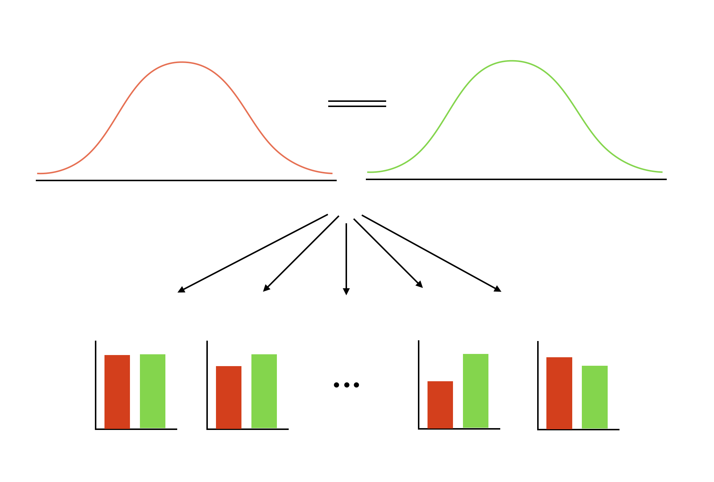

통계적 결론 타당도 (7장)
상담연구방법론, by Heppner, P. P., Wampold, B. E., Owen, J., Thopso, M. N.
통계적 가설 검증
영가설(null hypothesis) : 효과가 전혀 없다고 가정
- 예. “인지 치료 only 그룹의 불안 수준 = 인지 + 행동 치료 그룹의 불안 수준” 가정
- 대안 가설(alternative hypothesis) : 인지 + 행동 치료의 효과가 더 클 것임.
- 조사한 데이터를 통해, 영가설이 옳다고 볼 수 없는 근거를 제시하는 것임: 즉, “영가설을 기각(reject)”
- 사실상, 효과의 차이가 존재하지 않는다고 말할 수 없다고 주장하는 것임.
- 이는 연구자가 관찰한 특정 표본의 표집 오차(sampling error)에 대한 통계적 추론에 대한 논의임.
- 내 표본에서 발견된 차이가 (실제 아무 차이도 없음에도) 우연히 나타날 확률에 대한 값.
- 주로 95%의 신뢰구간을 사용하여, 우연히 나타날 확률이 5% 이하일 때, 영가설을 기각함.

- 따라서, 영가설이 참임에도 불구하고, 우연히 (차이 나는) 결과가 나타날 확률이 존재하므로 잘못 결론내일 오류가 존재함: 1종 오류
- 만약, 우연히 나타날 확률이 5% 이상으로 나타나서 영가설을 부정(기각, reject)하기 힘들다해도, 영가설이 맞다고 말할 수는 없음
- 영가설은 참이라는 가정이므로, 영가설이 맞다고 말할 수 없음
- 동시에, 대안 가설이 틀렸다고 말하는 것도 아님
- 여전히, 대안 가설이 맞을 수도 있음; 단지, 대안 가설을 지지할 만한 증거를 아직 발견하지 못했을 뿐임.
- 따라서, 영가설, 즉 “차이가 없다”라고 잘못 결론 짓는다면 오류를 범할 가능성이 존재함: 2종 오류
위 두 종류의 오류에 대해서 연구자가 선택/고려해야 하는 부분; cost & benefit
- 차이가 없는데 있다고 잘못 결론 내리면 큰 비용을 초래할 때, 1종 오류를 낮추도록 노력
- 예. “행동 치료”에 대한 비용이 매우 높을 때
- 우연히 나타날 확률이 예를 들어 1% 이하일 때 신중히 대안가설을 받아들이도록 (영가설을 기각하도록)
- 차이가 있는데 없다고 잘못 결론 내리면 큰 비용을 초래할 때, 2종 오류를 낮추도록 노력
- 예. 생사가 달린 병의 치료 효과
- 불안이 아닌 자살에 대한 효과라고 가정하면; “행동 치료”를 추가하지 않아서 생명을 살릴 기회를 놓칠 수 있음.
- 우연히 나타날 확률이 예를 들어 10% 정도 일지라도 여유롭게 대안가설을 받아들이도록 (영가설을 기각하도록)
- 행동 치료 비용이 너무 크지 않다는 전제하에…
기억할 것은
- 통계적으로 유의한 결과(즉, 우연히 나타날 확률이 5% 이하)를 얻었다고 해서, 대안 가설이 참이라고 절대적으로 확신할 수 없음.
- 반대로, 통계적으로 유의하지 않은 결과(즉, 우연히 나타날 확률이 5% 이상)를 얻었다고 해서, 아무 관계도 없다(차이가 없다)고 절대적으로 확신할 수 없음.
통계적 결론 타당도를 위협하는 요소들
낮은 통계적 검증력(statistical power)
실제 관계가 존재할 때, 그 관계가 존재한다고 통계적으로 결론 내릴 확률
- 예를 들어, 10명의 참여자로 통계적 검증을 해보면 관계가 있다고 결론내리기 힘듬 (실제 관계가 존재할지라도)
- 반대로, 적은 참여자라 할지라고, 관계가 매우 크다면/차이가 매우 크다면, 통계적 검증을 통해 관계가 있다고 결론내리기 쉬움
- 작은 차이에 대해서는 참여자의 수(표본의 수)를 늘리는 것이 통계적 검증력을 높이는 가장 좋은 방법임
통계 모형에서 가정의 위반
- 통계 이론은 많은 가정(assumptions)을 기반으로 함.
- 수집한 자료가 이 가정들에 부합하지 않는 정도에 따라 통계적 추론의 타당도가 낮아짐.
- 예. 정규분포에서 많이 벗어난 자료값들
- 예. 동일한 상담자를 만나는 내담자들 사이에서 나타나는 데이터의 의존성(dependency)를 무시한다면 통계적 검증을 신뢰할 수 없음; 치료의 효과가 마치 있는 것처럼 보일 수 있음. 사실은 “치료”가 아닌 “상담자”의 효과가 매우 클 수 있음.
Fishing과 오류율 문제
- 여러 가설을 동시에 검증할 때, 오류율이 축척되면서 통계적 결론 타당도가 낮아짐.
- Fishing: 구체적인 가설 없이 자료를 갖고 많은 통계적 검증을 시도
- 탐색적 연구 방식으로 가설의 기초를 제공; 추후 새로운 자료를 수집하여 가설을 검증
- 가설에 부합하도록 통계 검증을 하도록 권고
신뢰할 수 없는(unreliable) 측정치
- 측정할 때마다 다른 결과가 나오지 않는 측정기구를 사용해야 함.
- 척도도 마찬가지로 척도의 신뢰도라는 개념도 있음.
범위의 제한
- 측정하는 값이 구성개념에서 매우 높거나(ceiling effect) 매우 낮을 때(floor effect), 측정도구가 민감하지 못하게 작동
- 보통, 병리적 문제를 측정하도록 설계된 도구가 일반인들에게 사용될 때 발생.
- 통계적으로 차이를 발견하기 어려움.
신뢰할 수 없는 처치
- 연구자의 의도와 다르게 처치가 전달되거나 실행될 때
- 사회불안에 대한 “실제 행동연습”에서 과제가 다양한 방법으로 부과
- 내담자들에게 회귀 끝에 아무 설명 없이 글로 쓴 자료를 과제로 제시한 반면,
- 자세한 이유를 설명하고, 내담자들에게 과제를 제시한 경우
- 처치의 표준화가 필요함.
실험 조건에 따른 외재 변량
- 예. “실제 행동연습”에서 참여자들 각각 다양한 환경에서 과제를 수행; “술집”, “직장”, “수퍼마켓”
- 변량에 대해 노이즈/오차 변량(error variance)이 증가
실험 단위(참여자)의 이질성
- 사회불안에 대한 “실제 행동연습”에서 매력적인 참여자들인 더 많은 성공을 경험할 수 있음.
- 동질적인 표본 vs. 이질적 표본
- 표본이 동질적일 수록 노이즈가 감소하기에 통계적으로 검증하기 쉬워짐 (통계적 검증력이 높아짐)
- 반면, 표본이 특성이 다양한 집단으로 일반화되기 어려움 (외적 타당도가 낮아짐)
- 이질적인 표본에서 어떤 특성(매력도)에 대한 유사성이 결론에 미치는 영향을 통계적 절차를 통해 어느 정도 통제 가능
부정확한 효과 크기의 추정
측정하고자 하는 효과의 크기는 여러 방식으로 왜곡될 수 있음
- 극단적인 값들(outliers)
- 표본에서 측정된 효과는 모집단에 대한 효과를 과대추정하는 경향
- 부정확한 모형의 설정